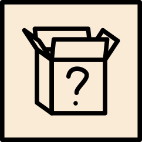
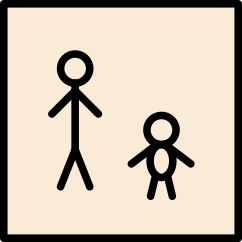

grammar focus

What…?names & thingsWhat's that?
It's a box.
What's your name?
My name is Sara. / I'm Sara.
What's = What is

What…like?personality & descriptionWhat's he like?
He's funny and friendly.
What's she like?
She's kind and very patient.
NOT "What does he like?" — that's preferences
How…?feelings & state
How are you?
I'm fine. / I'm great. / Not bad.
How's your mom?
She's tired today.
Very common greeting
How old…?age
How old are you?
I'm twenty-two. / I'm 22 years old.
How old is he?
He's nineteen.
Answer with a number + (years old)
 Where…?place & location
Where…?place & locationWhere's the cat?
It's under the table.
Where are your parents?
They're in Colombia.
where's = where is
Where…from?nationality & origin
Where are you from?
I'm from Brazil. / I'm Brazilian.
Where is she from?
She's from Japan. / She's Japanese.
from = origin
Who…?people & identity
Who is that?
That's my brother. / That's Leo.
Who is your teacher?
My teacher is Ms Rivera.
Who's = Who is
summary
| question word | question | answer |
|---|---|---|
| What | What's your name? | My name is Sara. |
| How | How are you? | I'm fine, thank you. |
| Where … from | Where are you from? | I'm from Brazil. |
| Who | Who is that? | That's my brother, Leo. |
| How old | How old is he? | He's nineteen. |
| What … like | What's he like? | He's funny and friendly. |
| Where | Where is your brother? | He's at school. |